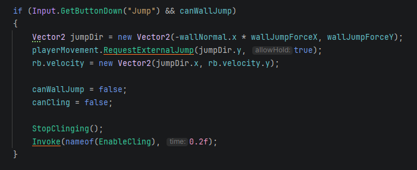
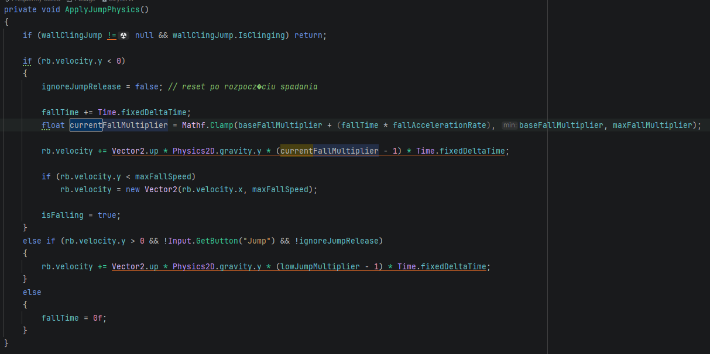

Zoonauts is a multi-level 2D puzzle platformer focused on logic puzzles, time-based challenges, character switching, and planning ahead. Each level requires players to analyse the environment, choose the right character, and execute actions in the correct order.
I was responsible for programming all core gameplay systems, including player characters, interactive objects, platforms, item collection, and win/lose conditions.

